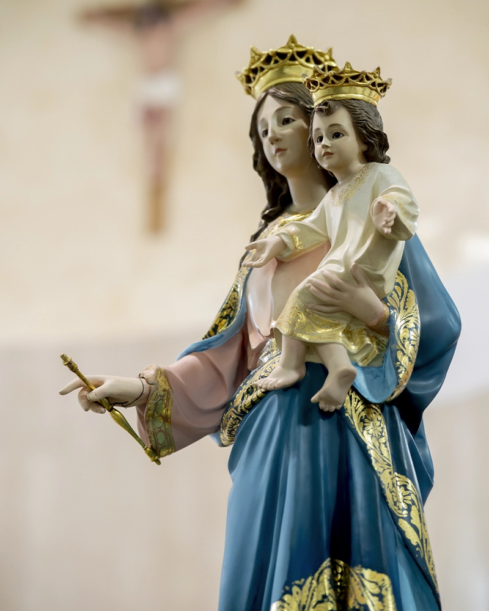

A Jesús por María
Acogiendo el manto protector de nuestra Madre.
Culto Mariano
En nuestra Asociación la devoción mariana es el camino más directo para llegar al Sagrado Corazón. Fomentamos el amor filial a nuestra Madre a través de prácticas profundas instauradas por la Iglesia.
Prácticas Devocionales
- El Santo Rosario: Meditación de los misterios de Cristo.
- Inmaculado Corazón: Triunfo prometido en Fátima.
- Primeros Sábados: Acto de reparación y amor.
